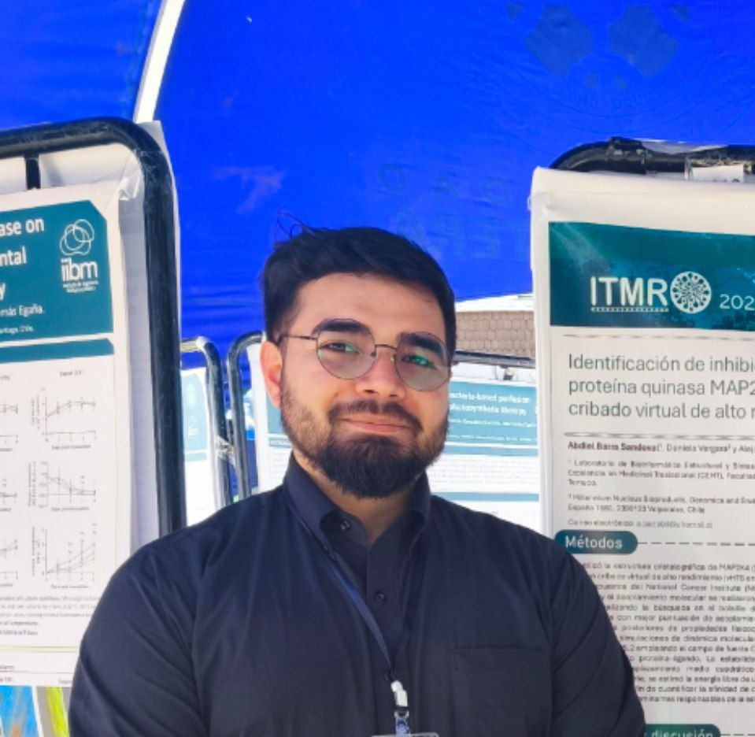
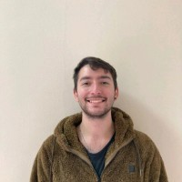
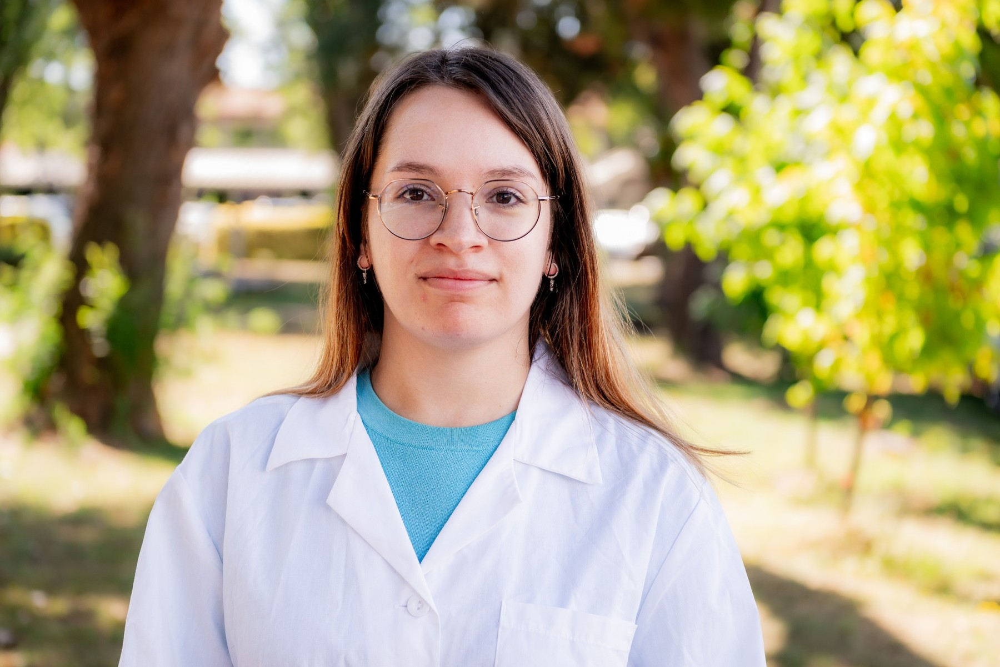
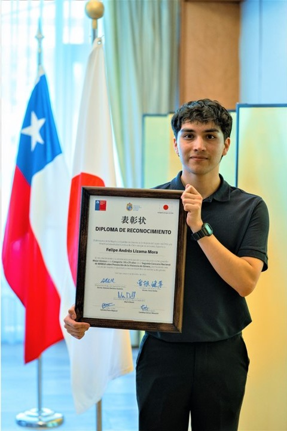
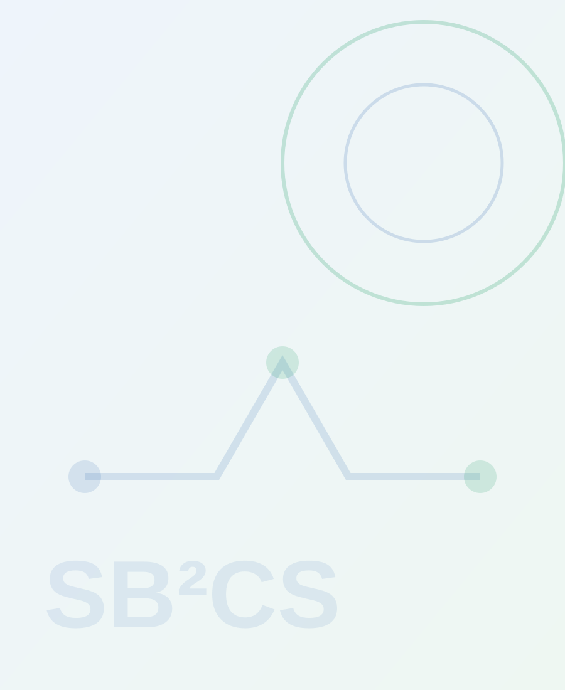

People
The team.
Researchers and students connecting medicinal chemistry, structural bioinformatics, synthesis, pharmacy and biotechnology.
Current members
Select a name to view the profile01Dr. Alejandro Castro-ÁlvarezPrincipal Investigator
Dr. Alejandro Castro-Álvarez
Principal Investigator
Organic chemist and computational molecular-design researcher. He leads SB²CS at the interface of structural bioinformatics, medicinal organic chemistry and experimentally accessible bioactive-compound design.
02Abdiel Barra SandovalPhD Student · Universidad de La Frontera

Abdiel Barra Sandoval
Biochemist | Research assistant | PhD student · Universidad de La Frontera
Former Biochemist and Research assistant, actual PhD student at Universidad de La Frontera's Molecular Biology Program and Former Research assistant contributing to the laboratory’s molecular and bioactive-compound research.
03Brian Fell SalinasPhD student · Universidad de Concepción

Brian Fell Salinas
PhD student · Universidad de Concepción
Doctoral researcher in chemistry at Universidad de Concepción and collaborator of SB²CS, connecting organic synthesis with molecular-design questions.
04Carolyn MayerPhD student · Universidad de La Frontera

Carolyn Mayer
Biotechnologist | Research assistant | PhD student · Universidad de La Frontera
Former Biotechnologist and Research assistant, actual PhD student at Universidad de La Frontera's Molecular Biology Progam participating in interdisciplinary research around bioactive compounds and computational–synthetic chemistry.
05Daniel UlloaPhD student · Universidad de La Frontera
Daniel Ulloa
Biotechnologist | Research assitant | PhD student · Universidad de La Frontera
Former Biotechnologist, actual Research assistant and PhD student at Universidad de La Frontera's Molecular Biology Program participating in the laboratory’s integrated computational and chemical research.
06Felipe Lizama-MoraUndergraduate thesis student · Universidad de La Frontera

Felipe Lizama-Mora
Undergraduate Biotechnology thesis student · Universidad de La Frontera
Undergraduate Biotechnology thesis student working in bioinformatics and chemoinformatics workflows, molecular design and the development of Moleku.
Alumni
Former members of the laboratoryValentina RojasAlumna · Former Biochemist research assistant

Valentina Rojas
Alumna · Former Biochemist research assistant
Former Biochemist SB²CS research assistant and member of the laboratory team.
Carlos Arias FuentesAlumnus · Former Pharmacist · Universidad de La Frontera
Carlos Arias Fuentes
Alumnus · Former Pharmacist · Universidad de La Frontera
Former Pharmacist student member of SB²CS. He later co-authored the laboratory’s 2026 review on translational perspectives of synthetic antioxidants.
Constanza Alarcón MolinaAlumna · Former Pharmacy student · Universidad de La Frontera
Constanza Alarcón Molina
Alumna · Former Pharmacy student · Universidad de La Frontera
Former Pharmacy student member of SB²CS and participant in the laboratory’s training environment.